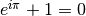

Time for meta-documentation: let’s document how you improve the documentation! This web site is written using a documentation tool called Sphinx.
The documentation source code is available as part of the pipeline source code, in the documentation subdirectory inside the pipeline root.
If you want to check only this directory out from the repository for some reason, you may do this as follows:
>>> svn checkout https://repos.seti.org/gpi/pipeline/trunk/documentation
The source files are plain text files using a simple text markup language called ReStructuredText (RST). Documentation for the syntax can be found here. The syntax is extremely simple and is intentionally much like the faux formatting you probably use in your emails without thinking about it, for instance using *asterisks around words* to indicate italics or **two asterisks** for bold.
Look over at the right side sidebar of this page. Near its bottom is a link “Show Source”. You can click that on any page of these manuals to see the source code for that page. Use this liberally to see how this system works and copy formatting for use on other pages as you edit things!
Edit the RST source file(s) as desired using your favorite text editor. Commit the code back in with svn as usual. Once the official repository gets updated from the svn, your changes will be visible to everyone.
Note
The official release copy at http://docs.planetimager.org/pipeline/ is only built manually, generally whenever there is a new version of the pipeline software released publicly.
There is also a nightly build of the latest documentation available at http://docs.planetimager.org/pipeline_dev/
You can include math using LaTeX syntax, for instance . The only difference from regular LaTeX is that you don’t use dollar signs to enclose it, you use the string ”:math:” and back quotes. See the math support in Sphinx documentation.
You will need the sphinx documentation tool and its numpydoc extension. We assume you already have an installation of python; if not you will need that too. See Installing Scientific Python for installation advice.
Assuming you have the pip python package installer, you can easily install the required tools from PyPI:
>>> pip install Sphinx
>>> pip install numpydoc
cd to the root directory documentation. If Sphinx is propery installed, you should be able to just run make html:
>>> make html
[huge printout of compiling status informational messages]
Build finished. The HTML pages are in ./doc_output/html.
try this to examine it:
open ./doc_output/html/index.html
The documentation will be built to HTML and you can view it locally. A similar command on the server will update the documentation there.
You can also similarly build the documentation to PDF, LaTeX, Windows Help, or several other formats as desired. Use make help to see the available output formats.
Pipeline primitive documentation is taken semi-automatically from the pipeline primitive headers in IDL, including the structured header comments used to populate the pipeline’s primitives config file.
This is done using the gen_doc_primitives.py script in the documentation root directory.
>>> python gen_doc_primitives.py
==>> usage/primitives.rst
This generates the usage/primitives page. That page should therefore not be edited by hand since it will be overwritten.